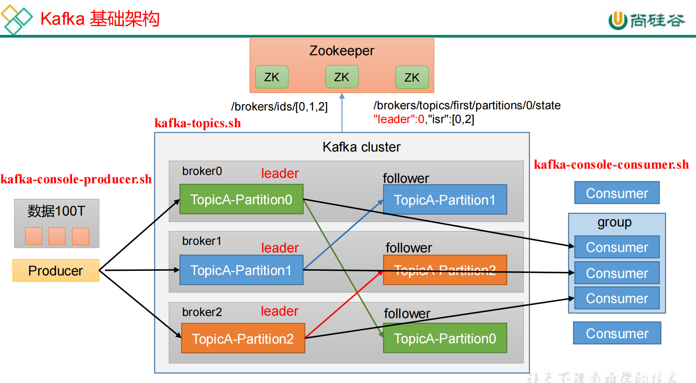
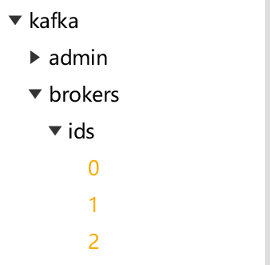
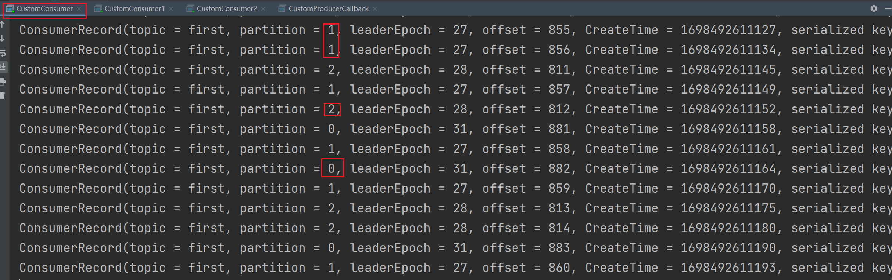
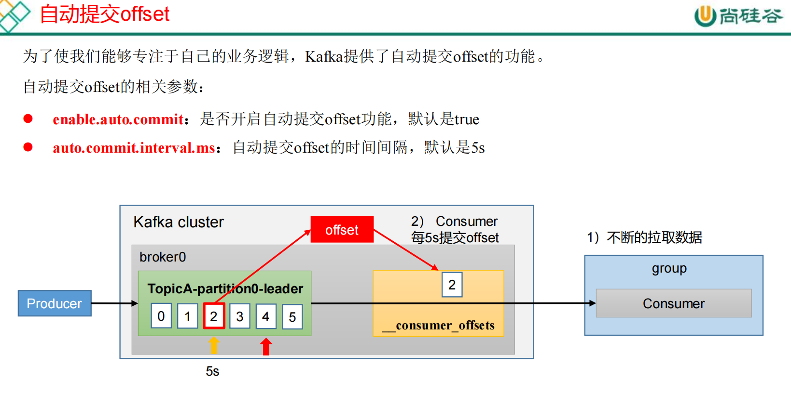
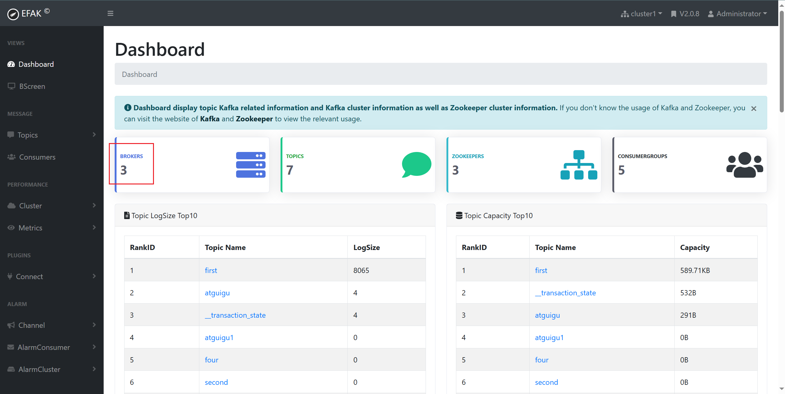

第一章 Kafka概述
1.1 定义
1.2 消息队列
目 前企 业中比 较常 见的 消息 队列产 品主 要有 Kafka、ActiveMQ 、RabbitMQ 、RocketMQ 等。
在大数据场景主要采用 Kafka 作为消息队列。在 JavaEE 开发中主要采用 ActiveMQ、RabbitMQ、RocketMQ。
1.2.1 传统消息队列的应用场景
传统的消息队列的主要应用场景包括：缓存/消峰、解耦和异步通信
1.2.2 消息队列的两种模式
（1）点对点模式
（2）发布/订阅模式
1.3 Kafka基础架构

（1）Producer：消息生产者，就是向 Kafka broker 发消息的客户端。
（2）Consumer：消息消费者，向 Kafka broker 取消息的客户端。
（3）Consumer Group（CG）：消费者组，由多个 consumer 组成。消费者组内每个消费者负责消费不同分区的数据，一个分区只能由一个组内消费者消费；消费者组之间互不影响。所有的消费者都属于某个消费者组，即消费者组是逻辑上的一个订阅者。
也就是说：一个分区如果被两个消费者消费，那么这两个消费者必定不在同一个组；
（4）Broker：一台Kafka服务器就是一个broker。一个集群由多个 broker （kafka）组成。一个broker （kafka）可以容纳多个 topic。
（5）Topic：可以理解为一个队列，生产者和消费者面向的都是一个 topic。
（6）Partition：为了实现扩展性，一个非常大的 topic 可以分布到多个 broker（即服务器）上，一个 topic 可以分为多个 partition，每个 partition 是一个有序的队列
（7）Replica：副本。一个 topic 的每个分区都有若干个副本，一个 Leader 和若干个Follower
（8）Leader：每个分区多个副本的“主”，生产者发送数据的对象，以及消费者消费数据的对象都是 Leader。
（9）Follower：每个分区多个副本中的“从”，实时从 Leader 中同步数据，保持和Leader 数据的同步。Leader 发生故障时，某个 Follower 会成为新的 Leader。
第二章 Kafka快速入门
2.1 安装部署
2.1.1 集群规划
2.1.2 集群部署
（0）将kafka的安装包拖拽到/opt/software/
（1）解压安装包
1 | [root@hadoop102 software]# tar -zxvf kafka_2.12-3.0.0.tgz -C /opt/module/ |
（2）修改解压后的文件名称
1 | [root@hadoop102 module]# mv kafka_2.12-3.0.0/ kafka |
（3）进入到/opt/module/kafka 目录，修改配置文件
1 | [root@hadoop102 kafka]# cd config/ |
1 | broker 的全局唯一编号，不能重复，只能是数字。 |
（4）分发安装包
1 | [root@hadoop102 module]# xsync kafka/ |
（5）分别在hadoop103和hadoop104上修改配置文件/opt/module/kafka/config/server.properties中的 broker.id=1、broker.id=2
注：broker.id 不得重复，整个集群中唯一。
1 | [root@hadoop103 module]# vim kafka/config/server.properties |
1 | [root@hadoop104 module]# vim kafka/config/server.properties |
（6）配置环境变量
在/etc/profile.d/my_env.sh 文件中增加 kafka 环境变量配置：
1 | [root@hadoop102 module]# vim /etc/profile.d/my_env.sh |
1 | KAFKA_HOME |
刷新新一下环境变量
1 | [root@hadoop102 module]# source /etc/profile |
分发环境变量文件到其他节点，并 source。
1 | [root@hadoop102 profile.d]# xsync my_env.sh |
（7）启动集群
必须先启动Zookeeper集群
1 | [root@hadoop102 profile.d]# zk.sh start |
然后依次在102，103，104节点上启动kafka
1 | [root@hadoop102 kafka]# bin/kafka-server-start.sh -daemon config/server.properties |
（8）关闭集群
1 | [root@hadoop102 kafka]# bin/kafka-server-stop.sh |
2.1.3 集群启停脚本
（1）在/bin 目录下创建文件 kf.sh 脚本文件
1 | [root@hadoop102 bin]# vim kf.sh |
1 | ! /bin/bash |
（2）添加执行权限
1 | [root@hadoop102 bin]# chmod 777 kf.sh |
（3）启动集群命令
1 | [root@hadoop102 bin]# kf.sh start |
注意zookeeper和kafa集群的启停顺序：
停止 Kafka 集群时，一定要等 Kafka 所有节点进程全部停止后再停止 Zookeeper集群。因为 Zookeeper 集群当中记录着 Kafka 集群相关信息，Zookeeper 集群一旦先停止，Kafka 集群就没有办法再获取停止进程的信息，只能手动杀死 Kafka 进程了。
①zookeeper启动 zk.sh start
②kafka启动 kf.sh start
③kafka停止 kf.sh stop
④zookeeper停止 zk.sh stop
2.2 Kafka命令行操作
2.2.1 主题命令行操作
（1）查看操作主题命令参数
1 | [root@hadoop102 kafka]# bin/kafka-topics.sh |
（2）查看当前服务器中的所有 topic（当前为空）
1 | [root@hadoop102 kafka]# bin/kafka-topics.sh --bootstrap-server hadoop102:9092 --list |
（3）创建first topic
topic名称为first，分区数为1，分区副本为3
1 | [root@hadoop102 kafka]# bin/kafka-topics.sh --bootstrap-server hadoop102:9092 --create --topic first --partitions 1 --replication-factor 3 |
（4）查看first主题的详情
1 | [root@hadoop102 kafka]# bin/kafka-topics.sh --bootstrap-server hadoop102:9092 --describe --topic first |
（5）修改分区数（注意：分区数只能增加，不能减少）
1 | [root@hadoop102 kafka]# bin/kafka-topics.sh --bootstrap-server hadoop102:9092 --topic first --alter --partitions 3 |
（6）再次查看详情
1 | [root@hadoop102 kafka]# bin/kafka-topics.sh --bootstrap-server hadoop102:9092 --describe --topic first |
2.2.2 生产者命令行操作
（1）查看操作生产者命令参数
1 | [root@hadoop102 kafka]# bin/kafka-console-producer.sh |
（2）发送消息
1 | [root@hadoop102 kafka]# bin/kafka-console-producer.sh --bootstrap-server hadoop102:9092 --topic first |
2.2.3 消费者命令行操作
（1）查看操作消费者命令参数
1 | [root@hadoop102 kafka]# bin/kafka-console-consumer.sh |
（2）消费数据
消费 first 主题中的数据（只是增量数据，历史数据不显示）
1 | [root@hadoop102 kafka]# bin/kafka-console-consumer.sh --bootstrap-server hadoop102:9092 --topic first |
把主题中所有的数据都读取出来（包括历史数据）。
1 | [root@hadoop102 kafka]# bin/kafka-console-consumer.sh --bootstrap-server hadoop102:9092 --topic first --from-beginning |
此时在生产者端输入一条数据，消费者端就能在对应的topic下收到一条数据。
第三章 Kafka的生产者
3.1 生产者消息发送流程
3.1.1 发送原理
在消息发送的过程中，涉及到了两个线程——****main 线程和 Sender 线程。在 main 线程中创建了一个双端队列 RecordAccumulator。main 线程将消息发送给 RecordAccumulator，Sender 线程不断从 RecordAccumulator 中拉取消息发送到 Kafka Broker。
3.1.2 生产者重要参数列表
| 参数名称 | 描述 |
|---|---|
| bootstrap.servers | 生产者连接集群所需的 broker 地址清单 。 例 如hadoop102:9092,hadoop103:9092,hadoop104:9092，可以设置 1 个或者多个，中间用逗号隔开。注意这里并非需要所有的 broker 地址，因为生产者从给定的 broker里查找到其他 broker 信息 |
| key.serializer 和 value.serializer | 指定发送消息的 key 和 value 的序列化类型。一定要写全类名 |
| buffer.memory | RecordAccumulator 缓冲区总大小，默认 32m |
| batch.size | 缓冲区一批数据最大值，默认 16k。适当增加该值，可以提高吞吐量，但是如果该值设置太大，会导致数据传输延迟增加 |
| linger.ms | 如果数据迟迟未达到 batch.size，sender 等待 linger.time之后就会发送数据。单位 ms，默认值是 0ms，表示没有延迟。生产环境建议该值大小为 5-100ms 之间 |
| acks | 0：生产者发送过来的数据，不需要等数据落盘应答 1：生产者发送过来的数据，Leader 收到数据后应答 -1（all）：生产者发送过来的数据，Leader+和 isr 队列里面的所有节点收齐数据后应答。默认值是-1，-1 和all 是等价的。 |
| max.in.flight.requests.per.connection | 允许最多没有返回 ack 的次数，默认为 5，开启幂等性要保证该值是 1-5 的数字 |
| retries | 当消息发送出现错误的时候，系统会重发消息。retries表示重试次数。默认是 int 最大值，2147483647。如果设置了重试，还想保证消息的有序性，需要设置MAX_IN_FLIGHT_REQUESTS_PER_CONNECTION=1否则在重试此失败消息的时候，其他的消息可能发送成功了 |
| retry.backoff.ms | 两次重试之间的时间间隔，默认是 100ms |
| enable.idempotence | 是否开启幂等性，默认 true，开启幂等性 |
| compression.type | 生产者发送的所有数据的压缩方式。默认是 none，也就是不压缩。支持压缩类型：none、gzip、snappy、lz4 和 zstd。 |
3.2 异步发送API
3.2.1 普通异步发送
（1）需求：创建 Kafka 生产者，采用异步的方式发送到 Kafka Broker，也就是从kafka Producer到RecordAccumulator实现异步发送。
（2）代码编写
①创建maven工程kafka
②导入依赖
1 | <dependency> |
③创建包名：com.atguigu.kafka.producer
④编写不带回调函数的 API 代码
1 | public class CustomProducer { |
测试：
在102上开启kafka消费者，运行java代码，观察hadoop102上的kafka消费者能否接收到消息：
1 | [root@hadoop102 kafka]# bin/kafka-console-consumer.sh --bootstrap-server hadoop102:9092 --topic first |
3.2.2 带回调函数的异步发送
回调函数会在 producer 收到 ack 时调用，为异步调用，该方法有两个参数，分别是元数据信息（RecordMetadata）和异常信息（Exception），如果 Exception 为 null，说明消息发送成功，如果 Exception 不为 null，说明消息发送失败。
1 | public class CustomProducerCallback { |
测试：
①在hadoop102上开启kafka消费者
②在IDEA中执行代码，观察102控制台是否收到消息，因为异步发送且设定了延迟，所以数据不一定按顺序到达消费者端
1 | [root@hadoop102 kafka]# bin/kafka-console-consumer.sh --bootstrap-server hadoop102:9092 --topic first |
③在IDEA控制台观察回调信息
1 | 主题： first->分区：0 |
3.3 同步发送API
1 | public class CustomProducerSync { |
测试：
在102上开启kafka消费者，运行java代码，观察hadoop102上的kafka消费者能否接收到消息：
1 | [root@hadoop102 kafka]# bin/kafka-console-consumer.sh --bootstrap-server hadoop102:9092 --topic first |
3.4 生产者分区
3.4.1 分区好处
（1）便于合理使用存储资源，每个Partition在一个Broker上存储，可以把海量的数据按照分区切割成一块一块数据存储在多台Broker上。合理控制分区的任务，可以实现负载均衡的效果。
（2）提高并行度，生产者可以以分区为单位发送数据；消费者可以以分区为单位进行消费数据。
3.4.2 生产者发送消息的分区策略
（1）默认的分区器DefaultPartitioner

（2）案例1：
将数据发往指定 partition 的情况下，例如，将所有数据发往分区 1 中。
1 | public class CustomProducerCallbackPartitions { |
测试：
在hadoop102上开启kafka消费者并观察其控制台：
1 | [root@hadoop102 kafka]# bin/kafka-console-consumer.sh --bootstrap-server hadoop102:9092 --topic first |
在IDEA控制台观察回调信息：
1 | 主题： first->分区：1 |
（3）案例2：
没有指明 partition 值但有 key 的情况下，将 key 的 hash 值与 topic 的 partition 数进行取余得到 partition 值。
1 | public class CustomProducerCallback { |
测试：
①key=”a”时，在控制台查看结果
1 | 主题：first->分区：1 |
②key=”b”时，在控制台查看结果
1 | 主题：first->分区：2 |
③key=”f”时，在控制台查看结果
1 | 主题：first->分区：0 |
3.4.3 自定义分区器
如果研发人员可以根据企业需求，自己重新实现分区器。
（1）需求
例如我们实现一个分区器实现，发送过来的数据中如果包含 atguigu，就发往 0 号分区，不包含 atguigu，就发往 1 号分区。
（2）实现步骤
编写MyPartitioner类：
1 | public class MyPartitioner implements Partitioner { |
使用分区器的方法，在生产者的配置中添加分区器参数
1 | public class CustomProducerCallbackPartitions { |
测试：
在hadoop102上开启kafka消费者，在IDEA控制台观察回调信息
1 | 主题： first->分区：0 |
3.5 生产经验——生产者如何提高吞吐量
1 | public class CustomProducerParameters { |
测试：
在hadoop102上开启kafka消费者，在IDEA中执行java代码，观察hadoop102控制台中是否收到消息
1 | [root@hadoop102 kafka]# bin/kafka-console-consumer.sh --bootstrap-server hadoop102:9092 --topic first |
3.6 生产经验——数据可靠性
（0）回顾
（1）ack应答原理
（2）代码配置
1 | public class CustomProducerAck { |
3.7 生产经验——数据去重
3.7.1 数据传递语义
3.7.2 幂等性
（1）幂等性原理

（2）如何使用幂等性
开启参数 enable.idempotence 默认为 true，false 关闭
3.7.3 生产者事务
（1）kafka事务原理
（2）kafaka的事务一共有如下5个API
1 | // 1 初始化事务 |
（3）代码实现
1 | public class CustomProducerTransactions { |
102的控制台成功收到消息。
3.8 生产经验——数据乱序
max.in.flight.requests.per.connection就是上图Request的个数，如果没有开启幂等性，设置为1说明缓存只有一个请求，只有该请求成功成功ack之后才能处理下一个请求，所以强制保证了请求按顺序到达，数据也是按顺序提交给消费者的。
如果开启了幂等性，幂等性中有SeqNumber，它是单调递增的，集群收到的数据如果SeqNumber非单调递增，它会在服务端重新排序，保证单调递增再传递，所以这也保证了数据的按序传递。而为什么max.in.flight.requests.per.connection最大设置成5，是因为启用幂等性后最多在kafka集群缓存生产者发送的5个request，也就是保证了最近5个request数据一定有序，超过5个就不保证了。
第四章 Kafka Broker
4.1 Kafka Broker工作流程
4.1.1 Zookeeper存储的Kafka信息
（1）启动 Zookeeper 客户端
1 | [root@hadoop102 ~]# cd /opt/module/zookeeper-3.5.7/ |
（2）通过 ls 命令可以查看 kafka 相关信息。
1 | [zk: localhost:2181(CONNECTED) 0] ls /kafka |
1 | [zk: localhost:2181(CONNECTED) 4] ls /kafka/brokers/ids |
也可以使用prettyZoo更方便地查看Zookeeper的节点信息：
4.1.2 Kafka Broker总体工作流程
（1）模拟Kafka上下线，Zookeeper中数据变化
①目前看/kafka/brokers/ids 路径上的节点：
②查看/kafka/controller 路径上的数据：
1 | { |
③查看/kafka/brokers/topics/first/partitions/0/state 路径上的数据：
1 | { |
④停止 hadoop104 上的 kafka
1 | [root@hadoop104 kafka]# bin/kafka-server-stop.sh |
⑤再次查看/kafka/brokers/ids 路径上的节点（Hadoop04对应ids=2，已经没了）
⑥再次查看/kafka/controller 路径上的数据
1 | { |
⑦再次查看/kafka/brokers/topics/first/partitions/0/state 路径上的数据。此时leader已经变成1了
1 | { |
⑧启动hadoop104上的Kafka，再次观察①②③步骤中的内容：
1 | [root@hadoop104 kafka]# bin/kafka-server-start.sh -daemon ./config/server.properties |
1 | { |
1 | { |
4.1.3 Broker重要参数
| 参数名称 | 描述 |
|---|---|
| replica.lag.time.max.ms | ISR 中，如果 Follower 长时间未向 Leader 发送通信请求或同步数据，则该 Follower 将被踢出 ISR。该时间阈值，默认 30s。 |
| auto.leader.rebalance.enable | 默认是 true。 自动 Leader Partition 平衡。 |
| leader.imbalance.per.broker.percentage | 默认是 10%。每个 broker 允许的不平衡的 leader的比率。如果每个 broker 超过了这个值，控制器会触发 leader 的平衡。 |
| leader.imbalance.check.interval.seconds | 默认值 300 秒。检查 leader 负载是否平衡的间隔时间。 |
| log.segment.bytes | Kafka 中 log 日志是分成一块块存储的，此配置是指 log 日志划分 成块的大小，默认值 1G。 |
| log.index.interval.bytes | 默认 4kb，kafka 里面每当写入了 4kb 大小的日志（.log），然后就往 index 文件里面记录一个索引。 |
| log.retention.hours | Kafka 中数据保存的时间，默认 7 天。 |
| log.retention.minutes | Kafka 中数据保存的时间，分钟级别，默认关闭。 |
| log.retention.ms | Kafka 中数据保存的时间，毫秒级别，默认关闭。 |
| log.retention.check.interval.ms | 检查数据是否保存超时的间隔，默认是 5 分钟。 |
| log.retention.bytes | 默认等于-1，表示无穷大。超过设置的所有日志总大小，删除最早的 segment。 |
| log.cleanup.policy | 默认是 delete，表示所有数据启用删除策略；如果设置值为 compact，表示所有数据启用压缩策略 |
| num.io.threads | 默认是 8。负责写磁盘的线程数。整个参数值要占总核数的 50%。 |
| num.replica.fetchers | 副本拉取线程数，这个参数占总核数的 50%的 1/3 |
| num.network.threads | 默认是 3。数据传输线程数，这个参数占总核数的50%的 2/3 。 |
| log.flush.interval.messages | 强制页缓存刷写到磁盘的条数，默认是 long 的最大值，9223372036854775807。一般不建议修改，交给系统自己管理。 |
| log.flush.interval.ms | 每隔多久，刷数据到磁盘，默认是 null。一般不建议修改，交给系统自己管理。 |
4.2 生产经验——节点服役和退役
4.2.1 服役新节点
（1）新节点准备
①关机hadoop104，右键执行克隆操作
②开启hadoop105，并修改IP地址
1 | [root@hadoop104 ~]# vim /etc/sysconfig/network-scripts/ifcfg-ens33 |
1 | IP地址 |
③在hadoop105上，修改主机名称为hadoop105
1 | [root@hadoop104 ~]# vim /etc/hostname |
④重启104，105
⑤删除 hadoop105 中 kafka 下的 datas 和 logs。
1 | [root@hadoop105 kafka]# rm -rf datas/* logs/* |
⑥修改hadoop105中kafka的broker.id 为 3
1 | [root@hadoop105 config]# vim server.properties |
⑦启动102，103，104上的kafka集群
1 | [root@hadoop102 zookeeper-3.5.7]# zk.sh start |
⑧单独启动105中的kafka
1 | [root@hadoop105 kafka]# bin/kafka-server-start.sh -daemon config/server.properties |
（2）执行负载均衡操作
①创建一个要均衡的主题
1 | [root@hadoop102 kafka]# vim topics-to-move.json |
1 | { |
②生成一个负载均衡的计划：【–broker-list “0,1,2,3”】
1 | [root@hadoop102 kafka]# bin/kafka-reassign-partitions.sh --bootstrap-server hadoop102:9092 --topics-to-move-json-file topics-to-move.json --broker-list "0,1,2,3" --generate |
③创建副本存储计划（所有副本存储在 broker0、broker1、broker2、broker3 中）。
1 | [root@hadoop102 kafka]# vim increase-replication-factor.json |
1 | {"version":1,"partitions":[{"topic":"first","partition":0,"replicas":[0,3,1],"log_dirs":["any","any","any"]},{"topic":"first","partition":1,"replicas":[1,0,2],"log_dirs":["any","any","any"]},{"topic":"first","partition":2,"replicas":[2,1,3],"log_dirs":["any","any","any"]}]} |
④执行副本存储计划。
1 | [root@hadoop102 kafka]# bin/kafka-reassign-partitions.sh --bootstrap-server hadoop102:9092 --reassignment-json-file increase-replication-factor.json --execute |
⑤验证副本存储计划
1 | [root@hadoop102 kafka]# bin/kafka-reassign-partitions.sh --bootstrap-server hadoop102:9092 --reassignment-json-file increase-replication-factor.json --verify |
1 | [root@hadoop102 kafka]# bin/kafka-topics.sh --bootstrap-server hadoop102:9092 --topic first --describe |
4.2.2 退役旧节点
（1）执行负载均衡操作
①创建一个要均衡的主题
1 | [root@hadoop102 kafka]# vim topics-to-move.json |
1 | { |
②创建执行计划：【–broker-list “0,1,2”】
1 | [root@hadoop102 kafka]# bin/kafka-reassign-partitions.sh --bootstrap-server hadoop102:9092 --topics-to-move-json-file topics-to-move.json --broker-list "0,1,2" --generate |
③创建副本存储计划（所有副本存储在 broker0、broker1、broker2 中）。
1 | [root@hadoop102 kafka]# vim increase-replication-factor.json |
1 | {"version":1,"partitions":[{"topic":"first","partition":0,"replicas":[0,1,2],"log_dirs":["any","any","any"]},{"topic":"first","partition":1,"replicas":[1,2,0],"log_dirs":["any","any","any"]},{"topic":"first","partition":2,"replicas":[2,0,1],"log_dirs":["any","any","any"]}]} |
④执行副本存储计划。
1 | [root@hadoop102 kafka]# bin/kafka-reassign-partitions.sh --bootstrap-server hadoop102:9092 --reassignment-json-file increase-replication-factor.json --execute |
⑤验证副本存储计划
1 | [root@hadoop102 kafka]# bin/kafka-reassign-partitions.sh --bootstrap-server hadoop102:9092 --reassignment-json-file increase-replication-factor.json --verify |
1 | [root@hadoop102 kafka]# bin/kafka-topics.sh --bootstrap-server hadoop102:9092 --topic first --describe |
（2）在105上执行停止命令，退役105节点
1 | [root@hadoop105 kafka]# bin/kafka-server-stop.sh |
4.3 Kafka副本
4.3.1 副本基本信息
Kafka 副本作用：提高数据可靠性
Kafka 默认副本 1 个，生产环境一般配置为 2 个，保证数据可靠性；太多副本会增加磁盘存储空间，增加网络上数据传输，降低效率
Kafka 中副本分为：Leader 和 Follower。Kafka 生产者只会把数据发往 Leader，然后 Follower 找 Leader 进行同步数据
Kafka 分区中的所有副本统称为 AR（Assigned Repllicas）。
AR = ISR + OSR
ISR，表示和 Leader 保持同步的 Follower 集合。如果 Follower 长时间未向 Leader 发送通信请求或同步数据，则该 Follower 将被踢出 ISR。该时间阈值由 replica.lag.time.max.ms参数设定，默认 30s。Leader 发生故障之后，就会从 ISR 中选举新的 Leader
OSR，表示 Follower 与 Leader 副本同步时，延迟过多的副本
4.3.2 Leader选举流程
Kafka 集群中有一个 broker 的 Controller 会被选举为 Controller Leader，负责管理集群broker 的上下线，所有 topic 的分区副本分配和 Leader 选举等工作。
Controller 的信息同步工作是依赖于 Zookeeper 的。
（1）创建创建一个新的 topic atguigu1，4 个分区，4 个副本
1 | [root@hadoop102 kafka]# bin/kafka-topics.sh --bootstrap-server hadoop102:9092 --create --topic atguigu1 --partitions 4 --replication-factor 4 |
（2）查看Leader分布情况
1 | [root@hadoop102 kafka]# bin/kafka-topics.sh --bootstrap-server hadoop102:9092 --describe --topic atguigu1 |
我们发现：在3分区中，Leader为3，如果停掉hadoop105的进程，那么Leader应该变为0（按照Replicas顺序）
1 | Topic: atguigu1 Partition: 3 Leader: 3 Replicas: 3,0,2,1 Isr: 3,0,2,1 |
（3）停止掉hadoop105的kafka进程，并查看Leader分区情况，和预想的一致
1 | [root@hadoop105 kafka]# bin/kafka-server-stop.sh |
我们发现：在2分区中，Leader为2，如果停掉hadoop104的进程，那么Leader应该变为1（按照Replicas顺序）
1 | Topic: atguigu1 Partition: 2 Leader: 2 Replicas: 2,1,0,3 Isr: 2,1,0 |
（4）停止掉 hadoop104 的 kafka 进程，并查看 Leader 分区情况，和预想的一致
1 | [rootu@hadoop104 kafka]# bin/kafka-server-stop.sh |
（5）启动 hadoop105 的 kafka 进程，并查看 Leader 分区情况
1 | [root@hadoop105 kafka]# bin/kafka-server-start.sh -daemon config/server.properties |
（6）启动 hadoop104 的 kafka 进程，并查看 Leader 分区情况
1 | [root@hadoop104 kafka]# bin/kafka-server-start.sh -daemon config/server.properties |
我们发现：在0分区中，Leader为1，如果停掉hadoop103的进程，那么Leader应该变为2（按照Replicas顺序）
1 | Topic: atguigu1 Partition: 0 Leader: 1 Replicas: 1,2,3,0 Isr: 1,0,3,2 |
我们发现：在2分区中，Leader为1，如果停掉hadoop103的进程，那么Leader应该变为2（按照Replicas顺序）
1 | Topic: atguigu1 Partition: 2 Leader: 1 Replicas: 2,1,0,3 Isr: 1,0,3,2 |
（7）停止掉 hadoop103 的 kafka 进程，并查看 Leader 分区情况
1 | [root@hadoop103 kafka]# bin/kafka-server-stop.sh |
4.3.3 Leader和Follower故障处理细节
Leader是先收到数据的，其余Follower对Leader中的数据进行拉取，所以Follower中的数据在某一时刻可能比Leader中要少
（1）Follower故障处理细节：
①当Follower没出现故障时，Leader和Follower们的LEO和HW：
.jpg)
②当Follower发生故障后会被踢出ISR：

③这个期间Leader和Follower继续接收数据，LEO和HW也不断更新：
.jpg)
④待该Follower恢复后，Follower会读取本地磁盘记录的上次的HW，并将log文件高于HW的部分截取掉，从HW开始向Leader进行同步。
.jpg)
⑤等该Follower的LEO大于等于该Partition的HW，即Follower追上Leader之后，就可以重新加入ISR了。
.jpg)
（2）Leader故障处理细节
①当Leader没出现故障时，Leader和Follower们的LEO和HW：
②Leader发生故障之后，会从ISR中选出一个新的Leader
.jpg)
.jpg)
③为保证多个副本之间的数据一致性，其余的Follower会先将各自的log文件高于HW的部分截掉，然后从新的Leader同步数据
.jpg)
注意：这只能保证副本之间的数据一致性，并不能保证数据不丢失或者不重复。
4.3.4 分区副本分配
如果 kafka 服务器只有 4 个节点，那么设置 kafka 的分区数大于服务器台数，在 kafka底层如何分配存储副本呢？
（1）创建16个分区，3个副本
①创建一个新的topic，名称为second
1 | [root@hadoop102 kafka]# bin/kafka-topics.sh --bootstrap-server hadoop102:9092 --create --partitions 16 --replication-factor 3 --topic second |
②查看分区和副本情况
1 | [root@hadoop102 kafka]# bin/kafka-topics.sh --bootstrap-server hadoop102:9092 --describe --topic second |
这个图，broker0~3代表的是hadoop102-105服务器（或者说kafka集群），横向每一行代表一个分区，一共16行，就代表16个分区。
4.3.5 生产经验——手动调整分区副本存储
步骤：
（1）创建一个新的 topic，名称为 three
1 | [root@hadoop102 kafka]# bin/kafka-topics.sh --bootstrap-server hadoop102:9092 --create --partitions 4 --replication-factor 2 --topic three |
（2）查看分区副本存储情况
1 | [root@hadoop102 kafka]# bin/kafka-topics.sh --bootstrap-server hadoop102:9092 --describe --topic three |
（3）创建副本存储计划（所有副本都指定存储在 broker0、broker1 中）。
1 | [root@hadoop102 kafka]# vim increase-replication-factor.json |
1 | { |
（4）执行副本存储计划
1 | [rootu@hadoop102 kafka]# bin/kafka-reassign-partitions.sh --bootstrap-server hadoop102:9092 --reassignment-json-file increase-replication-factor.json --execute |
（5）验证副本存储计划
1 | [root@hadoop102 kafka]# bin/kafka-reassign-partitions.sh --bootstrap-server hadoop102:9092 --reassignment-json-file increase-replication-factor.json --verify |
（6）查看分区副本存储情况。
1 | [root@hadoop102 kafka]# bin/kafka-topics.sh --bootstrap-server hadoop102:9092 --describe --topic three |
4.3.6 生产经验——Leader Partition负载平衡
| 参数名称 | 描述 |
|---|---|
| auto.leader.rebalance.enable | 默认是 true。 自动 Leader Partition 平衡。生产环境中，leader 重选举的代价比较大，可能会带来性能影响，建议设置为 false 关闭 |
| leader.imbalance.per.broker.percentage | 默认是 10%。每个 broker 允许的不平衡的 leader的比率。如果每个 broker 超过了这个值，控制器会触发 leader 的平衡 |
| leader.imbalance.check.interval.seconds | 默认值 300 秒。检查 leader 负载是否平衡的间隔时间 |
4.3.7 生产经验——增加副本因子
在生产环境当中，由于某个主题的重要等级需要提升，我们考虑增加副本。副本数的增加需要先制定计划，然后根据计划执行
（1）创建topic
1 | [root@hadoop102 kafka]# bin/kafka-topics.sh --bootstrap-server hadoop102:9092 --create --partitions 3 --replication-factor 1 --topic four |
（2）手动增加副本存储
①创建副本存储计划（所有副本都指定存储在 broker0、broker1、broker2 中）。
1 | [root@hadoop102 kafka]# vim increase-replication-factor.json |
1 | {"version":1,"partitions":[{"topic":"four","partition":0,"replicas":[0,1,2]}, |
②执行副本存储计划
1 | [root@hadoop102 kafka]# bin/kafka-reassign-partitions.sh --bootstrap-server hadoop102:9092 --reassignment-json-file increase-replication-factor.json --execute |
1 | [root@hadoop102 kafka]# bin/kafka-topics.sh --bootstrap-server hadoop102:9092 --describe --topic four |
4.4 文件存储
4.4.1 文件存储机制
（1）Topicc数据的存储机制
（2）Topic数据到底存储在什么位置？
①启动生产者，并发送消息（之前发过了）
②查看 hadoop102（或者 hadoop103、hadoop104）的/opt/module/kafka/datas/first-1（first-0、first-2）路径上的文件。
1 | [root@hadoop102 datas]# cd first-0 |
③直接查看日志，发现是乱码
④通过工具查看 index 和 log 信息。
1 | [root@hadoop102 first-0]# kafka-run-class.sh kafka.tools.DumpLogSegments --files ./00000000000000000000.index |
1 | [root@hadoop102 first-0]# kafka-run-class.sh kafka.tools.DumpLogSegments --files ./00000000000000000000.log |
（3）index文件和log文件详解
说明：日志存储参数配置
4.4.2 文件清理策略
Kafka 中默认的日志保存时间为 7 天，可以通过调整如下参数修改保存时间。
- log.retention.hours，最低优先级小时，默认 7 天。
- log.retention.minutes，分钟。
- log.retention.ms，最高优先级毫秒。
- log.retention.check.interval.ms，负责设置检查周期，默认 5 分钟。
那么日志一旦超过了设置的时间，怎么处理呢？
Kafka 中提供的日志清理策略有 delete 和 compact 两种。
（1）delete 日志删除：将过期数据删除
log.cleanup.policy = delete 所有数据启用删除策略
①基于时间：默认打开。以 segment 中所有记录中的最大时间戳作为该文件时间戳
②基于大小：默认关闭。超过设置的所有日志总大小，删除最早的 segment。log.retention.bytes，默认等于-1，表示无穷大
（2）compact 日志压缩（用的少）
4.5 高效读写数据（高频面试题，必会）
（1）kafka本身是分布式集群，可以采用分区技术，并行度高
（2）读数据采用稀疏索引，可以快速定位要消费的数据
（3）顺序写磁盘
（4）页缓存+零拷贝技术
| 参数 | 描述 |
|---|---|
| log.flush.interval.messages | 强制页缓存刷写到磁盘的条数，默认是 long 的最大值，9223372036854775807。一般不建议修改，交给系统自己管理。 |
| log.flush.interval.ms | 每隔多久，刷数据到磁盘，默认是 null。一般不建议修改，交给系统自己管理。 |
第五章 Kafka消费者
5.1 kafka消费方式
5.2 kafka消费者工作流程
5.2.1 消费者总体工作流程

可以一对一，多对一（无条件），如果一对多，对应的消费者一定是分属于不同消费者组的
5.2.2 消费者组原理
可以一对一，多对一（无条件）
如果一对多，对应的消费者一定是分属于不同的消费者组的
.jpg)
.jpg)
这里面的消费计划就是消费者组中的各个消费者拉取Partition分区的方案，谁拉取0号分区，谁拉取1号分区，谁拉取2号分区
.jpg)
再平衡就是其中某个消费者挂了之后，该消费者组内的其余消费者重新分配消费方案

5.2.3 消费者重要参数
| 参数名称 | 描述 |
|---|---|
| bootstrap.servers | 向 Kafka 集群建立初始连接用到的 host/port 列表。 |
| key.deserializer 和value.deserializer | 指定接收消息的 key 和 value 的反序列化类型。一定要写全类名。 |
| group.id | 标记消费者所属的消费者组。 |
| enable.auto.commit | 默认值为 true，消费者会自动周期性地向服务器提交偏移量 |
| auto.commit.interval.ms | 如果设置了 enable.auto.commit 的值为 true， 则该值定义了消费者偏移量向 Kafka 提交的频率，默认 5s。 |
| auto.offset.reset | 当 Kafka 中没有初始偏移量或当前偏移量在服务器中不存在（如，数据被删除了），该如何处理？ earliest：自动重置偏移量到最早的偏移量。 latest：默认，自动重置偏移量为最新的偏移量。 none：如果消费组原来的（previous）偏移量不存在，则向消费者抛异常。 anything：向消费者抛异常。 |
| offsets.topic.num.partitions | __consumer_offsets 的分区数，默认是 50 个分区。 |
| heartbeat.interval.ms | Kafka 消费者和 coordinator 之间的心跳时间，默认 3s。该条目的值必须小于 session.timeout.ms ，也不应该高于session.timeout.ms 的 1/3。 |
| session.timeout.ms | Kafka 消费者和 coordinator 之间连接超时时间，默认 45s。超过该值，该消费者被移除，消费者组执行再平衡 |
| max.poll.interval.ms | 消费者处理消息的最大时长，默认是 5 分钟。超过该值，该消费者被移除，消费者组执行再平衡。 |
| fetch.min.bytes | 默认 1 个字节。消费者获取服务器端一批消息最小的字节数 |
| fetch.max.wait.ms | 默认 500ms。如果没有从服务器端获取到一批数据的最小字节数。该时间到，仍然会返回数据。 |
| fetch.max.bytes | 默认 Default: 52428800（50 m）。消费者获取服务器端一批消息最大的字节数。如果服务器端一批次的数据大于该值（50m）仍然可以拉取回来这批数据，因此，这不是一个绝对最大值。一批次的大小受 message.max.bytes （brokerconfig）or max.message.bytes （topic config）影响 |
| max.poll.records | 一次 poll 拉取数据返回消息的最大条数，默认是 500 条。 |
5.3 消费者API
5.3.1 独立消费者案例（订阅主题）
（1）需求：创建一个独立消费者，消费 first 主题（所有分区）中数据
注意：在消费者 API 代码中必须配置消费者组 id。命令行启动消费者不填写消费者组id 会被自动填写随机的消费者组 id。
（2）实现步骤：
①创建包名：com.atguigu.kafka.consumer
②编写代码
1 | public class CustomConsumer { |
（3）测试
①在IDEA中执行消费者程序
②创建kafka生产者，并输入数据
1 | [root@hadoop102 kafka]# bin/kafka-console-producer.sh --bootstrap-server hadoop102:9092 --topic first |
③在IDEA的控制台观察到接收到的数据
1 | ConsumerRecord(topic = first, partition = 0, leaderEpoch = 26, offset = 32, CreateTime = 1698322534687, serialized key size = -1, serialized value size = 5, headers = RecordHeaders(headers = [], isReadOnly = false), key = null, value = hello) |
5.3.2 独立消费者案例（订阅分区）
（1）需求：创建一个独立消费者，消费first主题0号分区的数据
（2）代码
1 | public class CustomConsumerPartition { |
（3）测试
①在IDEA中执行消费者程序
②在 IDEA 中执行生产者程序 CustomProducerCallbackPartitions()，往first主题的分区0发送五条数据
1 | 主题： first->分区：0 |
③可以看到收到的数据
1 | ConsumerRecord(topic = first, partition = 0, leaderEpoch = 26, offset = 33, CreateTime = 1698326266217, serialized key size = 0, serialized value size = 9, headers = RecordHeaders(headers = [], isReadOnly = false), key = , value = atguigu 0) |
5.3.3 消费者组案例
（1）需求：测试同一个主题的分区数据，只能由一个消费者组中的一个消费
（2）实操
①复制两份 CustomConsumer代码，分别命名为 CustomConsumer1和 CustomConsumer2，在IDEA中同时启动，这三个消费者同属于一个消费者组
②启动代码中的生产者发送消息，可以看到每个消费者只能收到特定某个分区的数据

5.4 生产经验——分区的分配以及再平衡
| 参数名称 | 描述 |
|---|---|
| heartbeat.interval.ms | Kafka 消费者和 coordinator 之间的心跳时间，默认 3s。该条目的值必须小于 session.timeout.ms，也不应该高于session.timeout.ms 的 1/3。 |
| session.timeout.ms | Kafka 消费者和 coordinator 之间连接超时时间，默认 45s。超过该值，该消费者被移除，消费者组执行再平衡。 |
| max.poll.interval.ms | 消费者处理消息的最大时长，默认是 5 分钟。超过该值，该消费者被移除，消费者组执行再平衡。 |
| partition.assignment.strategy | 消费者分区分配策略 ， 默认策略是Range + CooperativeSticky。Kafka 可以同时使用多个分区分配策略。可以选择的策略包括 ： Range 、 RoundRobin 、 Sticky 、CooperativeSticky |
5.4.1 Range以及再平衡
（1）Range分区策略原理
（2）Range分区分配策略案例
①修改主题 first 为 7 个分区
1 | [root@hadoop102 kafka]# bin/kafka-topics.sh --bootstrap-server hadoop102:9092 --alter --topic first --partitions 7 |
注意：分区数可以增加，但是不能减少
②构建CustomConsumer，CustomConsumer1，CustomConsumer2为一个消费者组，组名为“test”，同时启动3个消费者
③启动 CustomProducer 生产者，发送 500 条消息，随机发送到不同的分区
说明：Kafka 默认的分区分配策略就是 Range + CooperativeSticky，所以不需要修改策略。
④观看 3 个消费者分别消费哪些分区的数据。
（3）Range分区分配再平衡案例
①停止掉0号消费者，快速重新发送消息观看结果（45s 以内，越快越好）。
1 号消费者：消费到 3、4 号分区数据。
2 号消费者：消费到 5、6 号分区数据。
0 号消费者的任务会整体被分配到 1 号消费者或者 2 号消费者。
说明：0 号消费者挂掉后，消费者组需要按照超时时间 45s 来判断它是否退出，所以需要等待，时间到了 45s 后，判断它真的退出就会把任务分配给其他 broker 执行。
②再次重新发送消息观看结果（45s 以后）。
1 号消费者：消费到 0、1、2、3 号分区数据。
2 号消费者：消费到 4、5、6 号分区数据。
说明：消费者 0 已经被踢出消费者组，所以重新按照 range 方式分配。
5.4.2 RoundRobin以及再平衡
（1）RoundRobin分区策略原理
（2）RoundRobin分区分配策略案例
依次在 CustomConsumer、CustomConsumer1、CustomConsumer2 三个消费者代码中修改分区分配策略为 RoundRobin
1 | // 修改分区分配策略 |
重启 3 个消费者，重复发送消息的步骤，观看分区结果
（3）RoundRobin分区分配再平衡案例
①停止掉 0 号消费者，快速重新发送消息观看结果（45s 以内，越快越好）。
1 号消费者：消费到 2、5 号分区数据
2 号消费者：消费到 4、1 号分区数据
0 号消费者的任务会按照 RoundRobin 的方式，把数据轮询分成 0 、6 和 3 号分区数据，分别由 1 号消费者或者 2 号消费者消费。**(也就是0号分区和6号分区给某个消费者，3号分区给某个消费者)**
说明：0 号消费者挂掉后，消费者组需要按照超时时间 45s 来判断它是否退出，所以需要等待，时间到了 45s 后，判断它真的退出就会把任务分配给其他 broker 执行。
②再次重新发送消息观看结果（45s 以后）
1 号消费者：消费到 0、2、4、6 号分区数据
2 号消费者：消费到 1、3、5 号分区数据
说明：消费者 0 已经被踢出消费者组，所以重新按照 RoundRobin 方式分配。


5.4.3 Sticky以及再平衡
（1）粘性分区定义：可以理解为分配的结果带有“粘性的”。即在执行一次新的分配之前，考虑上一次分配的结果，尽量少的调整分配的变动，可以节省大量的开销。
粘性分区是 Kafka 从 0.11.x 版本开始引入这种分配策略，首先会尽量均衡的放置分区到消费者上面，在出现同一消费者组内消费者出现问题的时候，会尽量保持原有分配的分区不变化。
（2）①修改分区分配策略为粘性
1 | // 修改分区分配策略 |
②发送数据，可以看到会尽量保持分区的个数近似划分分区。3：2：2

（3）Sticky 分区分配再平衡案例
①停止掉 0 号消费者，快速重新发送消息观看结果（45s 以内，越快越好）。
1 号消费者：消费到 4、5 号分区数据。
2 号消费者：消费到 3、6 号分区数据。
0 号消费者的任务会按照粘性规则，尽可能均衡的随机将0，1，2 号分区分成两份数据，分别由 1 号消费者或者 2 号消费者消费。
说明：0 号消费者挂掉后，消费者组需要按照超时时间 45s 来判断它是否退出，所以需要等待，时间到了 45s 后，判断它真的退出就会把任务分配给其他 broker 执行。
②再次重新发送消息观看结果（45s 以后）。
1 号消费者：消费到 0、2、4、5 号分区数据。
2 号消费者：消费到 1、3、6 号分区数据。
说明：消费者 0 已经被踢出消费者组，所以重新按照粘性方式分配。
5.5 offset位移
5.5.1 offset的默认维护位置
__consumer_offsets 主题里面采用 key 和 value 的方式存储数据。key 是 group.id+topic+分区号，value 就是当前 offset 的值。每隔一段时间，kafka 内部会对这个 topic 进行compact，也就是每个 group.id+topic+分区号就保留最新数据
（1）消费offset案例
①思想：__consumer_offsets 为 Kafka 中的 topic，那就可以通过消费者进行消费。
②在配置文件 config/consumer.properties 中添加配置 exclude.internal.topics=false，默认是 true，表示不能消费系统主题。为了查看该系统主题数据，所以该参数修改为 false。
③采用命令行方式，创建一个新的 topic
1 | [root@hadoop102 kafka]# bin/kafka-topics.sh --bootstrap-server hadoop102:9092 --create --topic atguigu --partitions 2 --replication-factor 2 |
④启动生产者往 atguigu 生产数据
1 | [root@hadoop102 kafka]# bin/kafka-console-producer.sh --topic atguigu --bootstrap-server hadoop102:9092 |
⑤启动消费者消费 atguigu 数据。
1 | [root@hadoop104 kafka]# bin/kafka-console-consumer.sh --bootstrap-server hadoop102:9092 --topic atguigu --group test |
注意：指定消费者组名称，更好观察数据存储位置（key 是 group.id+topic+分区号）。
⑥查看消费者消费主题__consumer_offsets。
1 | [root@hadoop102 kafka]# bin/kafka-console-consumer.sh --topic __consumer_offsets --bootstrap-server hadoop102:9092 --consumer.config config/consumer.properties --formatter "kafka.coordinator.group.GroupMetadataManager\$OffsetsMessageFormatter" --from-beginning |
1 | [test,atguigu,1]::OffsetAndMetadata(offset=2, leaderEpoch=Optional[0], metadata=, commitTimestamp=1698641012931, expireTimestamp=None) |
5.5.2 自动提交offset
（1）消费者自动提交offset
1 | public class CustomConsumerAutoOffset { |
5.5.3 手动提交offset
（1）同步提交offset
由于同步提交 offset 有失败重试机制，故更加可靠，但是由于一直等待提交结果，提交的效率比较低。以下为同步提交 offset 的示例。
1 | public class CustomConsumerByHandSync { |
（2）异步提交pffset
虽然同步提交 offset 更可靠一些，但是由于其会阻塞当前线程，直到提交成功。因此吞吐量会受到很大的影响。因此更多的情况下，会选用异步提交 offset 的方式。
1 | public class CustomConsumerByHandAsync { |
5.5.4 指定Pffset消费
auto.offset.reset = earliest | latest | none 默认是 latest。
当 Kafka 中没有初始偏移量（消费者组第一次消费）或服务器上不再存在当前偏移量时（例如该数据已被删除），该怎么办？
（1）earliest：自动将偏移量重置为最早的偏移量，–from-beginning。
（2）latest（默认值）：自动将偏移量重置为最新偏移量
（3）none：如果未找到消费者组的先前偏移量，则向消费者抛出异常。
（4）任意指定 offset 位移开始消费
1 | public class CustomConsumerSeek { |
注意：每次执行完，需要修改消费者组名
5.5.5 指定时间消费
需求：在生产环境中，会遇到最近消费的几个小时数据异常，想重新按照时间消费。例如要求按照时间消费前一天的数据，怎么处理？
1 | public class CustomConsumerSeekTime { |
5.5.6 漏消费和重复消费
重复消费：已经消费了数据，但是 offset 没提交。消费快，offset提交慢
漏消费：先提交 offset 后消费，有可能会造成数据的漏消费。消费慢，offset提交快
5.6 消费者事务
5.7 生产经验——数据积压（消费者如何提高吞吐量）
.jpg)
第六章 Kafka-Eagle监控
Kafka-Eagle 框架可以监控 Kafka 集群的整体运行情况，在生产环境中经常使用。
6.1 MySQL环境准备
之前Hive框架学习笔记中有
6.2 Kafka环境准备
（1）关闭Kafka集群
1 | [root@hadoop102 kafka]# kf.sh stop |
（2）修改/opt/module/kafka/bin/kafka-sever-start.sh命令
1 | [root@hadoop102 kafka]# vim bin/kafka-server-start.sh |
修改为：
1 | if [ "x$KAFKA_HEAP_OPTS" = "x" ]; then |
（3）分发到其他节点
1 | [root@hadoop102 bin]# xsync kafka-server-start.sh |
（4）启动Kafka集群
1 | [root@hadoop102 bin]# kf.sh start |
6.3 Kafka-Eagle安装
（1）上传压缩包到集群/opt/software目录
（2）解压到本地
1 | [root@hadoop102 software]# tar -zxvf kafka-eagle-bin-2.0.8.tar.gz |
（3）进入刚才解压的目录
1 | [root@hadoop102 kafka-eagle-bin-2.0.8]# ll |
（4）将efak-web-2.0.8-bin.tar.gz解压到/opt/module
1 | [root@hadoop102 kafka-eagle-bin-2.0.8]# tar -zxvf efak-web-2.0.8-bin.tar.gz -C /opt/module/ |
（5）修改名称
1 | [root@hadoop102 module]# mv efak-web-2.0.8/ efak |
（6）修改配置文件/opt/module/efak/conf/system-config.properties
1 | [root@hadoop102 conf]# vim system-config.properties |
1 | ##################################### |
（7）添加环境变量
1 | [root@hadoop102 conf]# vim /etc/profile.d/my_env.sh |
（8）启动
1 | [root@hadoop102 efak]# bin/ke.sh start |
说明：如果停止 efak，执行命令。
1 | [root@hadoop102 efak]# bin/ke.sh stop |
6.4 Kafka-Eagle页面操作
（1）登录页面查看监控数据
Account:admin ,Password:123456
查看BROKERS详情

查看TOPICS详情
查看ZOOKEEPERS详情
查看CONSUMERGROUPS详情
大屏展示：
第七章 Kafka-Kraft模式
7.1 Kafka-Kraft架构
左图为 Kafka 现有架构，元数据在 zookeeper 中，运行时动态选举 controller，由controller 进行 Kafka 集群管理。右图为 kraft 模式架构（实验性），不再依赖 zookeeper 集群，而是用三台 controller 节点代替 zookeeper，元数据保存在 controller 中，由 controller 直接进行 Kafka 集群管理。
这样做的好处有以下几个：
- Kafka 不再依赖外部框架，而是能够独立运行；
- controller 管理集群时，不再需要从 zookeeper 中先读取数据，集群性能上升；
- 由于不依赖 zookeeper，集群扩展时不再受到 zookeeper 读写能力限制；
- controller 不再动态选举，而是由配置文件规定。这样我们可以有针对性的加强controller 节点的配置，而不是像以前一样对随机 controller 节点的高负载束手无策。
7.2 Kafka-Kraft集群部署
（0）关闭kafka集群和zookeeper集群
1 | [root@hadoop102 module]# kf.sh stop |
（1）再次解压一份 kafka 安装包
1 | [root@hadoop102 software]# tar -zxvf kafka_2.12-3.0.0.tgz -C /opt/module/ |
（2）重命名为kafka2
1 | [root@hadoop102 module]# mv kafka_2.12-3.0.0/ kafka2 |
（3）在 hadoop102 上修改/opt/module/kafka2/config/kraft/server.properties 配置文件
1 | [root@hadoop102 module]# cd kafka2/config/kraft/ |
1 | kafka 的角色（controller 相当于主机、broker 节点相当于从机，主机类似 zk 功能） |
（4）分发kafka2
1 | [root@hadoop102 module]# xsync kafka2/ |
- 在 hadoop103 和 hadoop104 上 需 要 对 node.id 相应改变 ， 值 需 要 和controller.quorum.voters 对应。
- 在 hadoop103 和 hadoop104 上需要 根据各自的主机名称，修改相应的advertised.Listeners 地址。
（5）初始化集群数据目录
①首先生成存储目录唯一ID
1 | [root@hadoop102 kafka2]# bin/kafka-storage.sh random-uuid |
②用该 ID 格式化 kafka 存储目录（三台节点）。
1 | [rootu@hadoop102 kafka2]# bin/kafka-storage.sh format -t fmWatWf3SPe8m3ghz_RndA -c /opt/module/kafka2/config/kraft/server.properties |
（6）启动kafka集群
1 | [root@hadoop102 kafka2]# bin/kafka-server-start.sh -daemon config/kraft/server.properties |
1 | [root@hadoop102 kafka2]# xcall.sh jps |
（7）关闭kafka集群
1 | [root@hadoop102 kafka2]# bin/kafka-server-stop.sh |
7.3 Kafka-Kraft集群启停脚本
（1）~/bin 目录下创建文件 kf2.sh 脚本文件
1 | [root@hadoop102 bin]# vim kf2.sh |
1 | ! /bin/bash |
（2）添加执行权限
1 | [root@hadoop102 bin]# chmod 777 kf2.sh |
（3）集群启动和停止
1 | [root@hadoop102 bin]# kf2.sh start |